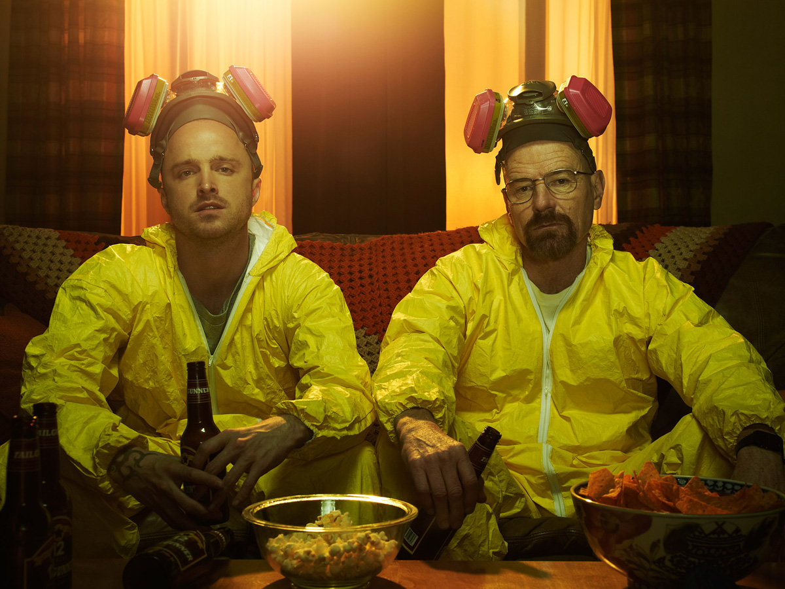
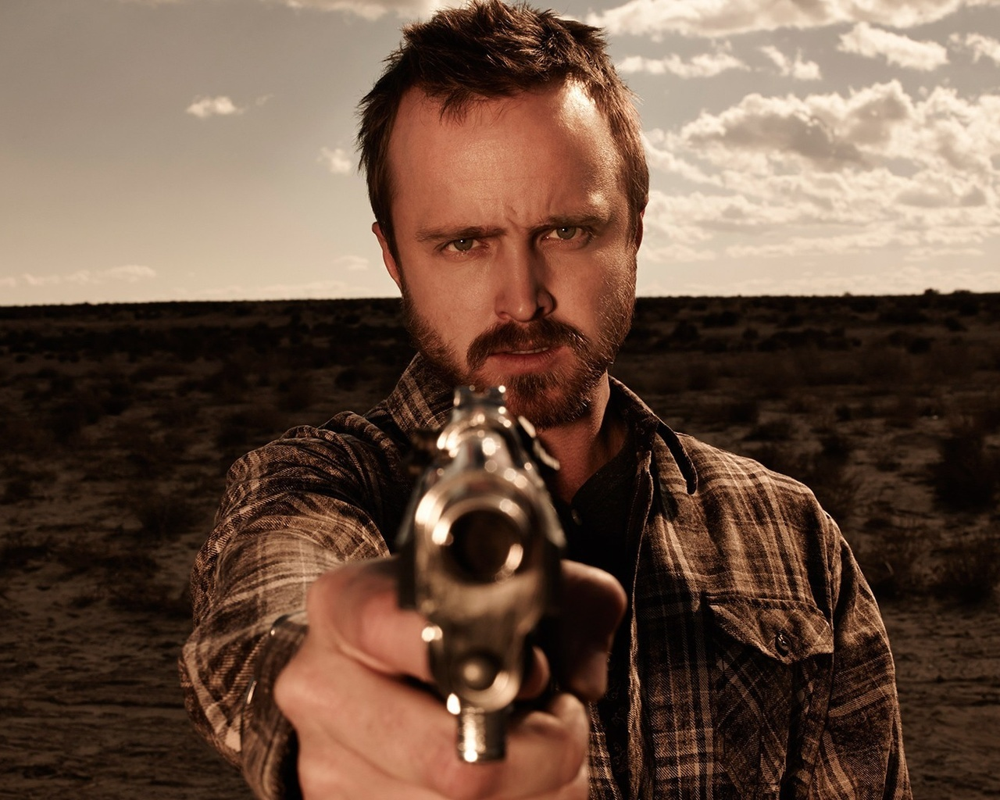
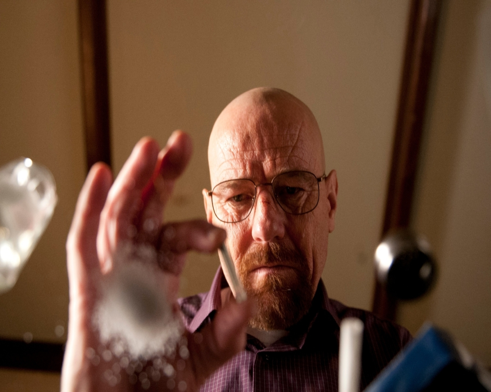
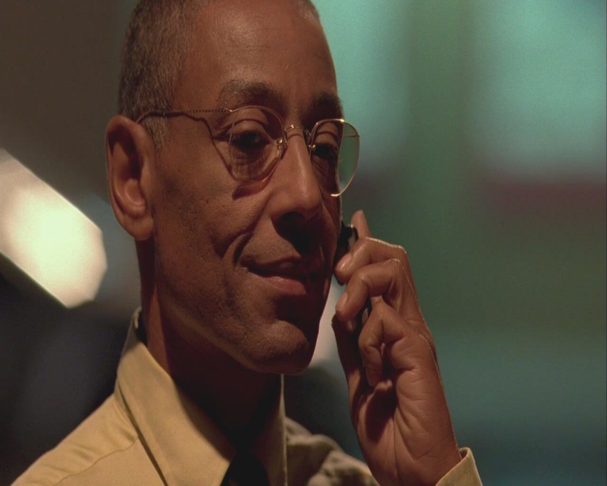
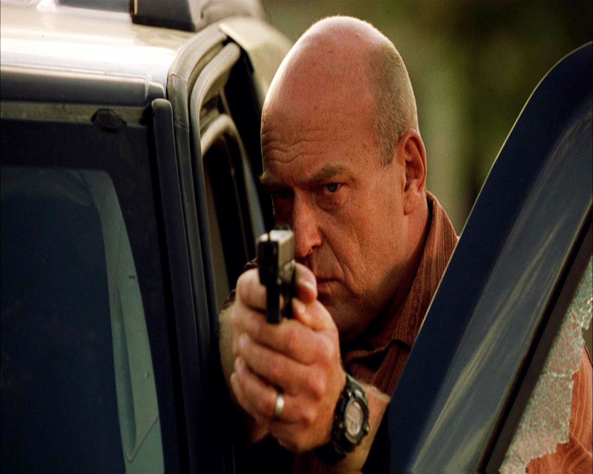
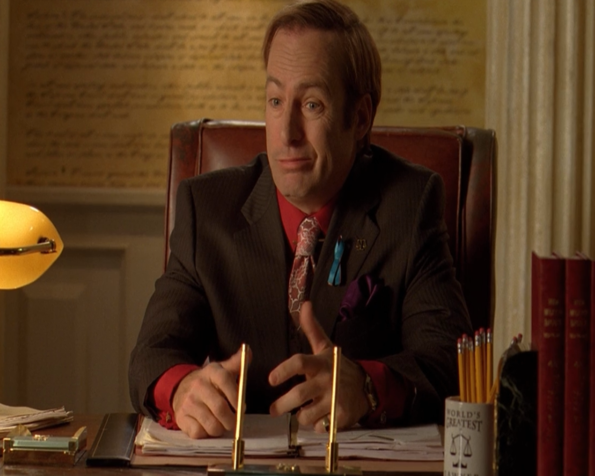

Breaking Bad, известный в России как «Во все тяжкие», регулярно попадает в
многочисленные
подборки лучших сериалов в истории, обычно занимая место в первой десятке или даже пятерке. Бывает так,
что
продюсеры еще на стадии разработки сценария и подготовки к съемкам понимают, что у них неизбежно
получится
телехит — «Игра престолов» яркий тому пример. Breaking Bad — не из их числа. Этой великой драмы вообще
могло
не быть, если бы не цепочка счастливых случайностей и череда незначительных на первый взгляд событий
Просто так сложились звезды
Ведь историю о больном раком легких учителе химии, который перед лицом неминуемой смерти решает заработать изготовлением наркотиков, отвергло сразу несколько телеканалов. TNT, Showtime, FX и даже HBO, что особенно забавно, ведь именно с «Игрой престолов» криминальная притча о Уолтере Уайте будет соперничать несколько лет кряду на самых престижных телевизионных премиях мира. В итоге Breaking Bad приютил AMC, и для кабельного канала это решение стало одним из самых удачных за всю его историю.
Breaking Bad — это сериал, в котором жизнь персонажей становится тяжелее и сложнее с каждой серией. И на своих плечах эту концепцию даже больше сценаристов, бесспорно написавших блистательный и вытягивающий из зрителей все жилы сюжет, вывозят актеры. Выдающихся актерских работ в Breaking Bad уйма, от Хэнка в исполнении Дина Норриса и Скайлер Уайт (Анна Ган) до Сола Гудмана Боба Оденкирка, наигравшего на полноценный спин-офф. Но две ключевые фигуры сериала, без упоминания которых абсолютно невозможно хвалить Breaking Bad, — это Уолтер Уайт и Джесси Пинкман. Брайан Кренстон и Аарон Пол.
Просто так сложились звезды
Ведь историю о больном раком легких учителе химии, который перед лицом неминуемой смерти решает заработать изготовлением наркотиков, отвергло сразу несколько телеканалов. TNT, Showtime, FX и даже HBO, что особенно забавно, ведь именно с «Игрой престолов» криминальная притча о Уолтере Уайте будет соперничать несколько лет кряду на самых престижных телевизионных премиях мира. В итоге Breaking Bad приютил AMC, и для кабельного канала это решение стало одним из самых удачных за всю его историю.
Breaking Bad — это сериал, в котором жизнь персонажей становится тяжелее и сложнее с каждой серией. И на своих плечах эту концепцию даже больше сценаристов, бесспорно написавших блистательный и вытягивающий из зрителей все жилы сюжет, вывозят актеры. Выдающихся актерских работ в Breaking Bad уйма, от Хэнка в исполнении Дина Норриса и Скайлер Уайт (Анна Ган) до Сола Гудмана Боба Оденкирка, наигравшего на полноценный спин-офф. Но две ключевые фигуры сериала, без упоминания которых абсолютно невозможно хвалить Breaking Bad, — это Уолтер Уайт и Джесси Пинкман. Брайан Кренстон и Аарон Пол.

Джесси Брюс Пинкман

Уолтер Хартвелл Уайт

Густаво ( Гус ) Фринг

Генри Р. "Хэнк" Шрейдер

Джеймс Морган «Джимми» Макгилл

Гектор Саламанка